MD Trader is the industry-leading interface that provides single-click order entry for an instrument while displaying market depth against a static, vertical price axis. The static price display gives you a visual sense of market movement over a period of time or relative to other markets.
In addition to the market data displayed for an instrument in the MD Trader header pane, you can view your average price of open position, estimated position in queue (EPIQ), last traded quantity (LTQ), and volume-at-price (VAP) in the MD Trader columns.
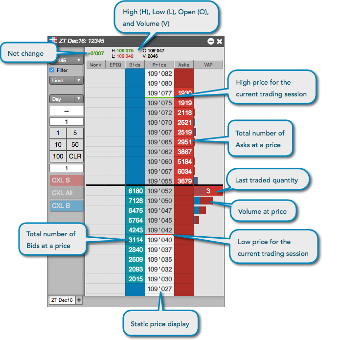
MD Trader displays bid and ask quantities and market depth along a static price display in the Price column. As the best bid and ask prices change, the price display remains static.
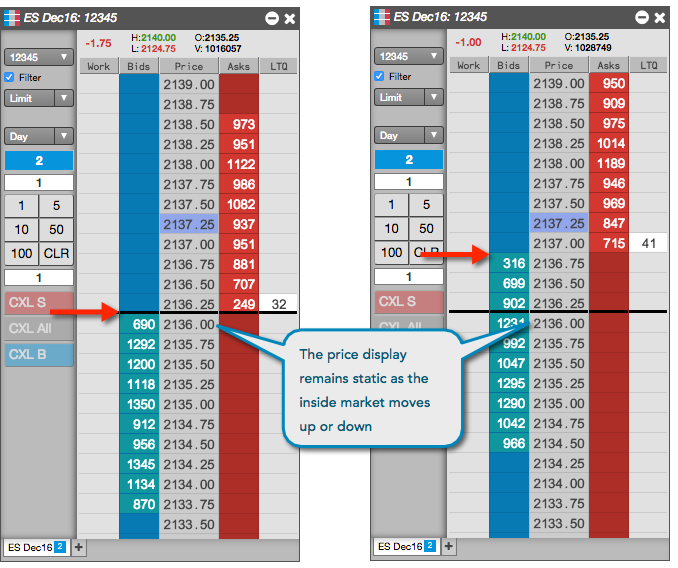
To make it easier to identify the midpoint of the inside market, MD Trader places a black center bar across the width of its grid. The center bar appears between the best bid and ask prices in the static price display. As the best bid and ask prices move up or down, the center bar remains static until you recenter the market to its midpoint.
In MD Trader, bid and ask quantities and market depth move up or down along the static Price column to indicate price movement. This allows you to view the price movement in one instrument relative to the price movement in other instruments. In the following example, the CL Dec16 contract is up two ticks from its previous midpoint, in relation to the CL Jan17 contract that is up one tick and the CL Feb17 contract that is down one tick from its midpoint.
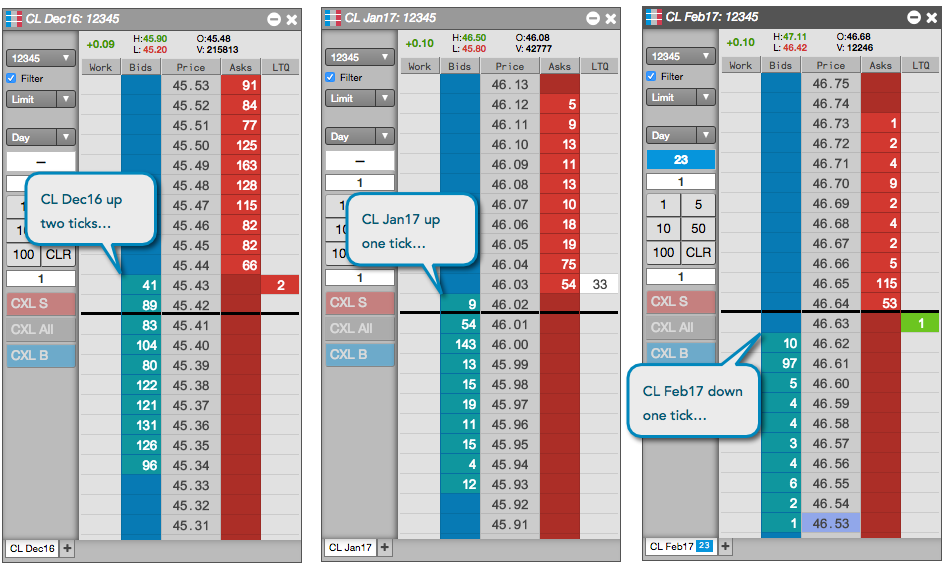
MD Trader displays the last trade quantity (LTQ) in the LTQ column at the best bid or ask price. The LTQ column is shown by default, but you can show/hide the column using the Show Last Traded Quantity option in the local MD Trader: Settings.
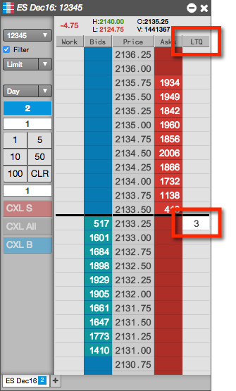
The LTQ value is color-coded to indicate if the trade occurred at a price that was higher, lower, or the same as the last traded price (LTP):
Note: The LTQ column shows the indicative quantity for indicative or theoretical open prices that are provided by the exchange during Pre-Open or Auction market states.
Optionally, you can highlight the Last Traded Price (LTP) in the static price display by using the Highlight Last Traded Price (LTP) on price column option in the local MD Trader: Settings.
The highlighted LTP value is color-coded to indicate if the trade occurred at a price that was higher, lower, or the same as the previous LTP. MD Trader highlights the price column cell with the default LTP color settings or your customized settings:
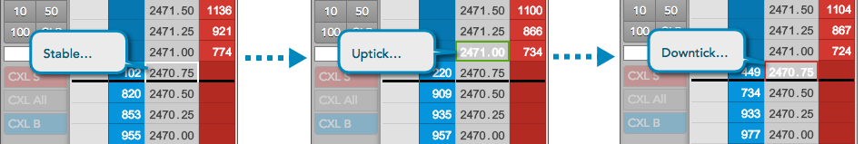
From the context menu, you can also expose an additional VAP column in MD Trader to display the total trade volume at each price level as a gray bar. By default, showing VAP displays the combined volume for buy and sell orders. You can select options to split the volume bar into buy (blue) and sell (red) quantities, to display the total quantity as a number and to reset (and restore) the VAP counter to show only volume that occurs after the reset. You can also hide the bars and show only the numeric values.
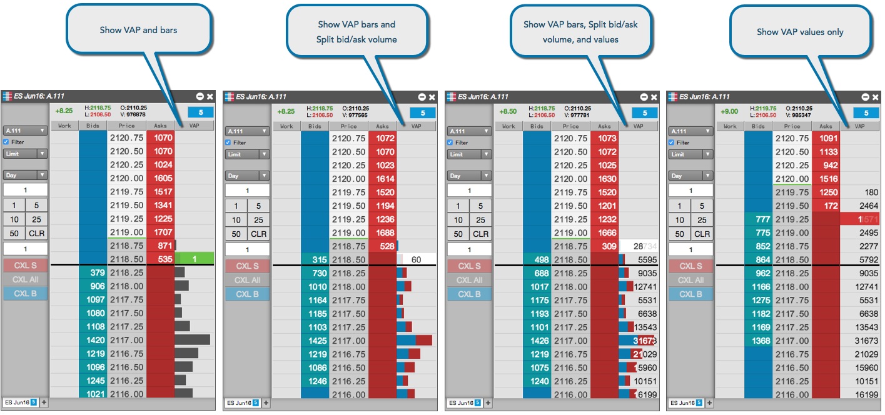
Tip: When you hover on a bar or cell in the VAP column, the VAP value at that price is displayed in a tooltip.
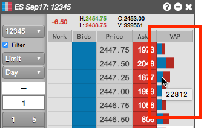
By default, VAP displays the trade volume since the start of the session. If you want to start showing only recent volume, you can reset the VAP counter to display only trade volume that occurs from that moment on. At any time, you can switch back to the total session volume by restoring the VAP counter. To simplify resetting and restoring the VAP counter, MD Trader supports the following shortcuts in addition to the context menu items:
MD Trader displays indicative or theoretical open prices that are provided by the exchange during Pre-Open or Auction market states. During these market states, the indicative price is used for calculating the net change displayed in MD Trader and your P/L displayed in the Positions widget. If you recenter MD Trader, the indicative open price is used as the reference price for recentering the market.
If an exchange provides an indicative open (matched) price, MD Trader highlights the price column cell with the default LTP Column color settings (or your customized settings):
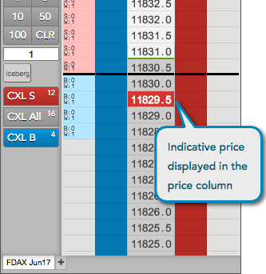
If the indicative Bid and Ask prices do not cross or match during the Pre-open or Auction states, a yellow border displays in the corresponding Bids and Asks columns:
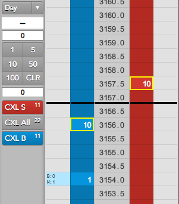
Upon receiving a new price update during an open trading market state, MD Trader restores any previously highlighted indicative price cells in the price column to the Price Column default colors defined in Settings: MD Trader.
For Advanced Options users, the theoretical value of an option or strategy instrument is displayed as a laser line in the Price column.
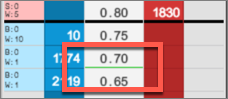
Some exchanges provide detailed depth allowing you to see every order at a price level.
{% include detailed-depth.html %}You can view detailed depth in MD Trader by checking the Show detailed depth on hover checkbox in Settings: MD Trader. When this option is enabled, you can see the quantity of each individual order at a price level for an instrument that supports detailed depth.
To display detailed depth, hover on the total number of bids in the Bids column or total number of asks in the Asks column at each level of depth in the price ladder. In the depth column that appears, the top row shows the quantity of the order that is best in queue at that price.
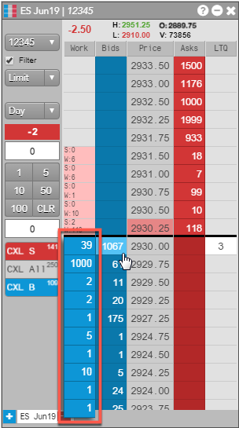
Up to ten levels of detailed depth are displayed at once. You can scroll through the column to view any additional levels that may be provided. To close the display, click away from the Bids or Asks column.
MD Trader can display an asterisk in the Bids and Asks price levels to indicate that all or part of the displayed quantity at a price level includes implied quantities. To help visualize the implied quantities, you can enable the Show implieds with an asterisk (*) widget setting, which will display an asterisk next to quantities that are partially or completely implied, as shown.
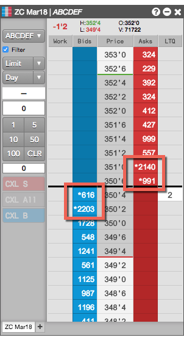
If provided by the exchange, quantities of resting Buy/Sell pre-open Market orders, as well as "On Auction" and "On Close" Market orders during Auction states are displayed in the top right of the header panel in MD Trader. The B: field displays the total quantity of resting Buy Market orders, and the A: field displays the total quantity of resting Sell Market orders.
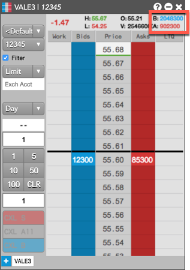